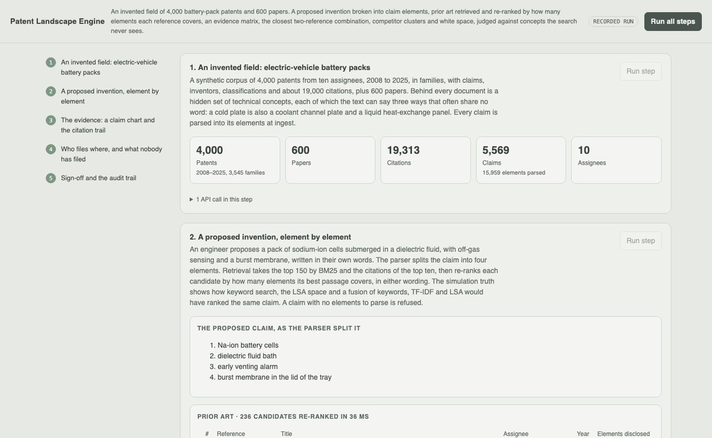
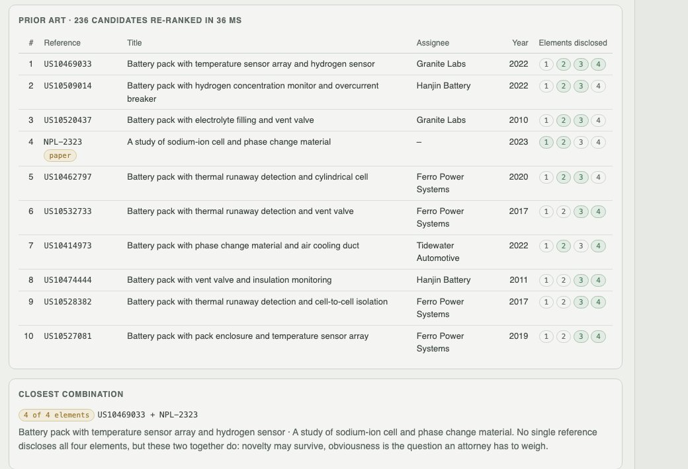
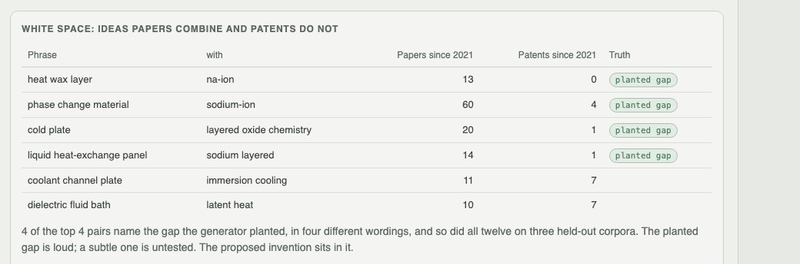

Python · information retrieval · citation graph · 2026-10
Is This Invention New, and Where Has Nobody Filed?
Prior-art search on an invented field of 4,000 battery-pack patents and 600 papers: a proposed claim split into elements, references re-ranked by how many elements they disclose in any wording (nDCG@10 0.70 → 0.79 over keyword search on 450 held-out inventions), an evidence matrix, the closest two-reference combination, and the white space papers have reached and patents have not.

Built from a written blueprint as one vertical slice. The corpus is simulated: patents, papers, assignees, inventors, citations and benchmark inventions come from a generator in the repository, and none is a real patent or company. No language model and no downloaded embedding model is used; the dense space is LSA learned from the corpus. The claim parser is rule-based and reads claims the same generator wrote, so its accuracy here is partly circular; retrieval is judged instead against hidden concepts no retriever sees. Not built: bi-encoder and cross-encoder retrieval, LLM summaries, real patent data, obviousness analysis, Kafka, Terraform, single sign-on.
01 — The problem
Before filing, an IP team needs to know whether anything already discloses the invention: not a document that shares its words, but one that teaches each of its elements, often in different words. Keyword search finds the first kind. A landscape adds the second question: which combinations of ideas are active in research and still empty in patents. Can a search built without a language model find references by element, lay the evidence out claim by claim, and say honestly how much better it is than keywords?
Blueprint 13 of twenty in a fourth build book, built as its demo scenario end to end.
02 — What I built
A Python service on PostgreSQL with a background worker and a web page, started by one docker compose up.
- A synthetic corpus of battery-pack patents in families, with claims, inventors, classes and citations, and papers, written over 48 hidden concepts with three wordings each.
- A claim parser that splits a claim into elements, at ingest and for every query.
- Retrieval: BM25, TF-IDF and LSA over documents and 52,523 passages, then element re-ranking by how many elements each candidate's best passage covers.
- A claim chart with the disclosing passage per element, the closest two-reference combination, CSV and JSON export, and attorney sign-off.
- A landscape: clusters with who files in each, a white-space score from phrase pairs in papers against patents, PageRank and portfolios.
03 — How it was built
- 01
A field with hidden concepts
48 concepts in six areas (cooling, chemistry, battery management, mechanical, safety, manufacturing), each with three wordings that often share no word: a cold plate is also a coolant channel plate and a liquid heat-exchange panel. Ten assignees with their own focus write 4,000 patents from 2008 to 2025, about a fifth of them continuations; 600 papers; 19,313 citations that favour earlier documents sharing concepts. Papers since 2021 often put sodium-ion cells together with thermal management; patents mostly do not. That is the planted gap.
if GAP[0] in cs and set(cs) & set(GAP[1:]) and r.random() < 0.85: cs = [c for c in cs if c != GAP[0]] + [other_chemistry] # the white space stays nearly empty - 02
A claim, element by element
The parser takes the body after "comprising", splits it on semicolons and cuts each part at its relation ("disposed between", "that", "in which"). The demo's claim, sodium-ion cells submerged in a dielectric fluid bath with an early venting alarm and a burst membrane, becomes four elements. Because the parser reads text the same generator wrote, its 100% here says little about real claims; the evaluation does not rest on it.
body = re.split(r"\bcompris(?:ing|es)\s*:?", text, maxsplit=1)[-1] elements = [STOP_AFTER.sub("", LEAD.sub("", p.strip())) for p in body.split(";")] - 03
Re-ranking by elements disclosed
BM25 picks 150 candidates and the citations of its top ten are added. Each candidate is then scored by how many of the claim's elements its best passage covers, with similarity taken as 40% TF-IDF and 60% LSA cosine and passed through a soft threshold, so a reference that discloses three elements outranks one that repeats a single element often. In the demo 236 candidates are re-ranked in 36 ms.
covered = 1 / (1 + np.exp(-(sims - threshold) * 25)) # elements x candidates score = covered.sum(axis=0) + 0.2 * sims.mean(axis=0) - 04
Evidence, and the closest combination
For the top references, each element is matched to its best passage and counts as disclosed at similarity 0.30, a threshold set on the demo corpus. The claim chart shows the passage itself. No document discloses all four elements of the demo's claim; the pair among the top ten that covers the most does cover all four, which is a question of obviousness for an attorney, not something the search decides. A search session is signed off by an attorney, never by the analyst who ran it.
cov = int((hit[:, a] | hit[:, b]).sum()) # elements covered by references a and b together - 05
White space, and where it is too easy
Phrases of one to three words that never cross a stop word, in at least 15 documents; each pair is scored by how often recent papers combine it against how often recent patents do. On the demo corpus the top four pairs all name the planted gap in different wordings (13 papers to 0 patents, 60 to 4, 20 to 1, 14 to 1), and so did 12 of 12 on three held-out corpora. The gap was planted loud: 18% of recent papers. A subtle gap is untested.
score = ((papers + 1) / n_papers) / ((patents + 1) / n_patents)
04 — Results
The demo. Ten references for the proposed claim, each with the elements it discloses, and the closest combination:

White space: pairs of ideas recent papers combine and patents do not:

On three corpora the demo never uses (450 benchmark inventions, relevance graded by hidden concept overlap):
| nDCG@10 | Recall@50 | |
|---|---|---|
| BM25 keywords | 0.699 | 0.426 |
| LSA alone | 0.591 | 0.323 |
| Fusion of BM25, TF-IDF and LSA | 0.633 | 0.360 |
| Element re-ranking + citations | 0.786 | 0.462 |
The gain comes from scoring each element separately, not from the dense space: LSA alone was worse than keywords and dragged the fusion below them. Paraphrase costs the system as much as it costs BM25 (0.896 → 0.786 against 0.796 → 0.699), so the re-ranker does not solve synonymy. Citation expansion added nothing measurable. Recall of near-anticipations in the top 50 is under half. Evidence cells scored 0.984 precision and 0.961 recall, flattered by template text; the closest combination truly covered every element for 435 of 450 inventions.
Honest limits. Synthetic corpus and synthetic judgments; a rule-based parser reading generator text; no learned embeddings; the planted white space is easy to find.
Checks. 9 tests, including: the parser splits elements and drops relations, phrases never cross a sentence, element re-ranking beats BM25 on held-in inventions, the evidence matrix agrees with the hidden truth and the closest pair truly covers the demo claim, white space names the planted gap, the demo runs end to end, analysts cannot sign off their own search, and one tenant cannot see another's searches.
05 — What I'd do next
- A sentence-transformer per passage in place of LSA, measured on the same benchmark, with paraphrase cost as the number to beat.
- A cross-encoder over the top 50 for the evidence matrix.
- A harder benchmark: subtle white space and inventions written far from any template.